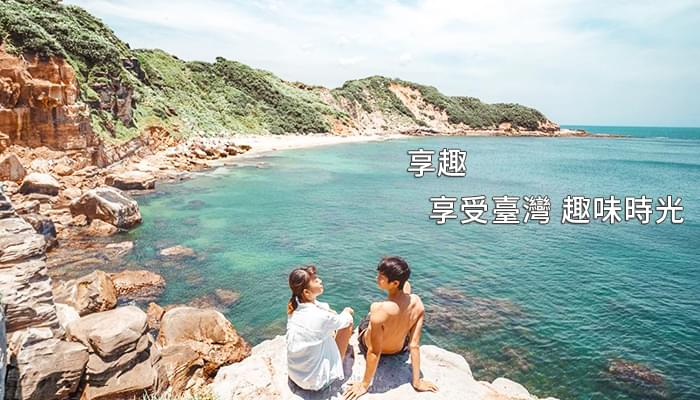

帳號登入
註冊帳號
快速登入

August 07, 2020
by 我就坐在你旁編
夏天爬郊山步道即使能欣賞美景，但每每爬完山總是滿頭大汗實夏天最適合的登山路線就是台灣的高山步道，夏季山上不像冬季積雪，反而非常涼爽，還可以一窺平地郊山難見的針葉林和高山平原，避暑同時還能鍛鍊兼看景，絕對是夏日爬山首選。
宜蘭｜太平山翠峰湖
翠峰湖座落於宜蘭縣太平山與大元山之間，海拔將近兩千公尺，為台灣最大的高山湖泊，隨著乾濕季節都有不同的樣貌。雖然地處高山，卻非常容易抵達，距離太平山莊只有約40分鐘的車程，步道全長也才不到四公里，想要下山再來個下午茶，完全沒問題！
南投｜石門山步道
石門山步道位於武嶺停車場附近，為百岳山中最簡易的步道，但景色卻完全不輸其他百岳路線，沿途幾乎是步行在稜線上，可以一邊眺望遠方的奇萊山，一邊看著蜿蜒公路穿梭在山巒之間。
南投｜合歡山群峰
另外合歡山群峰也是非常好入門風景又極佳的登山路線，其中合歡南峰也是一條不長好走的路線，大約30分鐘就可以登頂，登頂後若覺得不過癮也可以繼續走開闊的草原到達合歡主峰，沿途草原山景，和涼爽的風，完全不用擔心太陽曝曬。
想不到炎炎夏日裡台灣還能有涼爽的步道吧！這幾座高山冬天時可能會下雪～現在去彷彿就是天然冷氣房，訓練體力還能欣賞高山美景。另外，出發前一定要戴上防風的禦寒衣物避免著涼，畢竟稜線上的風，吹久了還是會冷唷！
上一篇文章
2020澎湖國際海灣燈光節即將登場！活動時間&展場亮點都在這，花火節沒趕上也不可惜！
下一篇文章
全台7座「秘境湖泊」避暑勝地！從冰蝕湖到森林仙境，台灣之最都在這